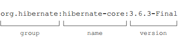

声明依赖
DSL配置block dependencies用来给配置添加一个或多个依赖，你的项目不仅可以添加外部依赖，下面这张表显示了Gradle支持的各种不同类型的依赖。

这一章只介绍外部模块依赖和文件依赖，我们来看看Gradle APi是怎么表示依赖的。
理解依赖的API表示
每个Gradle项目都有一个DependencyHandler的实例，你可以通过getDependencies()方法来获取依赖处理器的引用，上表中每一种依赖类型在依赖处理器中都有一个相对应的方法。每一个依赖都是Dependency的一个实例，group, name, version, 和classifier这几个属性用来标识一个依赖，下图清晰的表示了项目(Project)、依赖处理器(DependencyHandler)和依赖三者之间的关系：

外部模块依赖
在Gradle的术语里，外部库通常是以JAR文件的形式存在，称之为外部模块依赖，代表项目层次外的一个模块，这种类型的依赖是通过属性来唯一的标识，接下来我们来介绍每个属性的作用。
依赖属性
当依赖管理器从仓库中查找依赖时，需要通过属性的结合来定位，最少需要提供一个name。
- group： 这个属性用来标识一个组织、公司或者项目，可以用点号分隔，Hibernate的group是org.hibernate。
- name： name属性唯一的描述了这个依赖，hibernate的核心库名称是hibernate-core。
- version： 一个库可以有很多个版本，通常会包含一个主版本号和次版本号，比如Hibernate核心库3.6.3-Final。
- classifier： 有时候需要另外一个属性来进一步的说明，比如说明运行时的环境，Hibernate核心库没有提供classifier。
依赖的写法
你可以使用下面的语法在项目中声明依赖：
dependencies {
configurationName dependencyNotation1, dependencyNotation2, ...
}
你先声明你要给哪个配置添加依赖，然后添加依赖列表，你可以用map的形式来注明，你也可以直接用冒号来分隔属性，比如这样的：

//声明外部属性
ext.cargoGroup = 'org.codehaus.cargo'
ext.cargoVersion = '1.3.1'
dependencies {
//使用映射声明依赖
compile group: cargoGroup, name: 'cargo-core-uberjar', version: cargoVersion
//用快捷方式来声明，引用了前面定义的外部属性
cargo "$cargoGroup:cargo-ant:$cargoVersion"
}
如果你项目中依赖比较多，你把一些共同的依赖属性定义成外部属性可以简化build脚本。
Gradle没有给项目选择默认的仓库，当你没有配置仓库的时候运行deployTOLocalTomcat任务的时候回出现如下的错误：
$ gradle deployToLocalTomcat
:deployToLocalTomcat FAILED
FAILURE: Build failed with an exception.
Where: Build file '/Users/benjamin/gradle-in-action/code/chapter5/cargo-configuration/build.gradle' line: 10
What went wrong:
Execution failed for task ':deployToLocalTomcat'.
> Could not resolve all dependencies for configuration ':cargo'.
> Could not find group:org.codehaus.cargo, module:cargo-core-uberjar, version:1.3.1.
Required by:
:cargo-configuration:unspecified
> Could not find group:org.codehaus.cargo, module:cargo-ant,version:1.3.1.
Required by:
:cargo-configuration:unspecified
到目前为止还没讲到怎么配置不同类型的仓库，比如你想使用MavenCentral仓库，添加下面的配置代码到你的build脚本中：
repositories {
mavenCentral()
}
检查依赖报告
当你运行dependencies任务时，这个依赖树会打印出来，依赖树显示了你build脚本声明的顶级依赖和它们的传递依赖：

仔细观察你会发现有些传递依赖标注了*号，表示这个依赖被忽略了，这是因为其他顶级依赖中也依赖了这个传递的依赖，Gradle会自动分析下载最合适的依赖。
排除传递依赖
Gradle允许你完全控制传递依赖，你可以选择排除全部的传递依赖也可以排除指定的依赖，假设你不想使用UberJar传递的xml-api的版本而想声明一个不同版本，你可以使用exclude方法来排除它：
dependencies {
cargo('org.codehaus.cargo:cargo-ant:1.3.1') {
exclude group: 'xml-apis', module: 'xml-apis'
}
cargo 'xml-apis:xml-apis:2.0.2'
}
exclude属性值和正常的依赖声明不太一样，你只需要声明group和(或)module，Gradle不允许你只排除指定版本的依赖。
有时候仓库中找不到项目依赖的传递依赖，这会导致构建失败，Gradle允许你使用transitive属性来排除所有的传递依赖：
dependencies {
cargo('org.codehaus.cargo:cargo-ant:1.3.1') {
transitive = false
}
// 选择性的声明一些需要的库
}
动态版本声明
如果你想使用一个依赖的最新版本，你可以使用latest.integration，比如声明 Cargo Ant tasks的最新版本，你可以这样写 org.codehaus .cargo:cargo-ant:latest-integration，你也可以用一个+号来动态的声明：
dependencies {
//依赖最新的1.x版本
cargo 'org.codehaus.cargo:cargo-ant:1.+'
}
Gradle的dependencies任务可以清晰的看到选择了哪个版本，这里选择了1.3.1版本：
$ gradle –q dependencies
------------------------------------------------------------
Root project
------------------------------------------------------------
Listing 5.4 Excluding a single dependency
Listing 5.5 Excluding all transitive dependencies
Listing 5.6 Declaring a dependency on the latest Cargo 1.x version
Exclusions can be
declared in a shortcut
or map notation.
120 CHAPTER 5 Dependency management
cargo - Classpath for Cargo Ant tasks.
\--- org.codehaus.cargo:cargo-ant:1.+ -> 1.3.1
\--- ...
文件依赖
如果你没有使用自动的依赖管理工具，你可能会把外部库作为源代码的一部分或者保存在本地文件系统中，当你想把项目迁移到Gradle的时候，你不想去重构，Gradle很简单就能配置文件依赖。下面这段代码复制从Maven中央仓库解析的依赖到libs/cargo目录。
task copyDependenciesToLocalDir(type: Copy) {
//Gradle提供的语法糖
from configurations.cargo.asFileTree
into "${System.properties['user.home']}/libs/cargo"
}
运行这个任务之后你就可以在依赖中声明Cargo库了，下面这段代码展示了怎么给cargo配置添加JAR文件依赖：
dependencies {
cargo fileTree(dir: "${System.properties['user.home']}/libs/cargo",include: '*.jar')
}